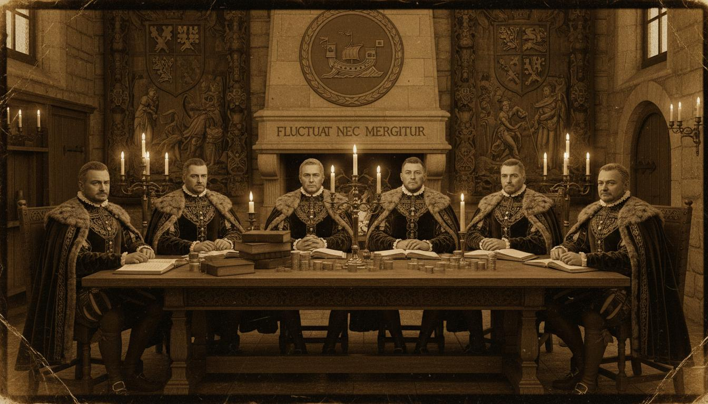
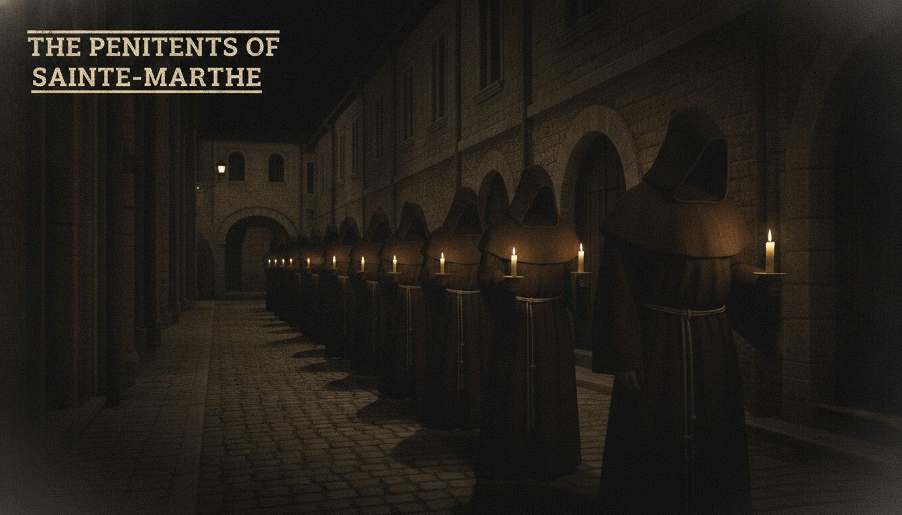

Chapitre V
Ce que l'Office devint — Les Guildes et les Confreries
La restructuration ne prit pas des mois. Elle prit des semaines, parce que l'infrastructure existait deja.
Les agents de l'O.F.F.I.C.E. avaient, depuis deux siecles, recrute preferentiellement parmi les marchands. Ces marchands appartenaient a des guildes. Ces guildes avaient des correspondants dans chaque ville, des regles internes inaccessibles aux non-membres, des reunions regulieres que personne n'attendait qu'elles fussent publiques, et des raisons legitimes de faire circuler de l'argent, des lettres et des hommes sans que quiconque y trouvat a redire.
Paris etait organisee autour des Six Corps de Marchands — les six grandes corporations autorisees a commercer en gros dans la capitale : les Drapiers, les Epiciers, les Merciers, les Fourreurs, les Bonnetiers et les Orfevres. Chaque corps de metier etait double par une ou plusieurs confreries assurant les oeuvres charitables et pieuses, notamment les hospices pour les compagnons malades et l'assistance aux mourants.

Les Six Corps de Marchands de Paris — Hall de guilde, fin du XVIe siecle
Parmi les Six Corps, les Merciers occupaient une position particuliere. Les Merciers — negociants en soieries, etoffes, dentelles, toiles et marchandises diverses — constituaient le corps le plus nombreux, avec des statuts datant de 1407. Ils ne produisaient rien et ne transformaient rien : ils vendaient et transportaient tout. Six branches de specialite avaient ete constituees par lettres patentes d'Henri II en 1558. Leur reseau couvrait Lyon, Bordeaux, Anvers, Geneve — exactement les villes ou l'O.F.F.I.C.E. avait ses cellules les plus actives.
Il y avait un autre detail que personne ne nota par ecrit mais que les agents de la reunion de Lyon connaissaient tous : les Bonnetiers avaient leur bureau rue des Ecrivains — la meme rue ou, deux cent quarante ans plus tot, six survivants s'etaient reunis dans une cave pour reecrire leurs regles fondatrices.
Admission de Henri Soulier, trente-deux ans declares, natif de Clermont-Ferrand, domicilie rue des Lombards depuis deux ans. Caution fournie par Jacques Moreau, maitre mercier, rue Saint-Denis.
Specialites : toile, soieries legeres, correspondance commerciale en francais et latin. Voyages declares : Lyon, Bordeaux, Geneve, Anvers.
Note de l'examinateur : candidat serieux. Latin excellent, hors norme pour un marchand. Connait ses routes. Admis.
Note marginale de H. Maret, 1891Henri Soulier = probablement Thomas Guilhem, identite changee. Verifier contre registre interne IV/C.
Les confreries fournirent l'autre couverture — et celle-la etait, a certains egards, la plus parfaite.
La France de 1589 etait couverte de confreries de penitents : associations laiques vouees a la priere collective, aux processions, et a l'assistance aux condamnes a mort et aux malades. Leurs membres portaient, lors des processions et des interventions nocturnes, des robes longues a capuche dissimulant entierement le visage. L'anonymat etait une regle de l'ordre, justifiee theologiquement par l'humilite chretienne. On ne savait pas qui se trouvait sous la robe. On ne demandait pas.
Voila le detail que les agents de l'O.F.F.I.C.E. noterent immediatement : les confreries de penitents avaient pour mission officielle de se rendre dans les maisons des malades et des mourants. Toutes les maisons. Meme celles ou la maladie avait pris des formes que personne ne voulait regarder de trop pres.

Procession des Penitents de Sainte-Marthe, Lyon, circa 1590
Une nouvelle confrerie — les Penitents de Sainte-Marthe, patronne des hotesses et des servantes, choisie deliberement pour son caractere peu remarquable — fut fondee a Lyon en 1590, a Paris en 1592, a Bordeaux, Rouen et Toulouse dans les annees qui suivirent. Ses statuts etaient en tous points conformes aux confreries de l'epoque. Sauf l'article sept.
Article VII
Les freres et soeurs de la Confrerie s'engagent a repondre a tout appel provenant d'une maison ou la maladie a pris des formes que le medecin ordinaire ne reconnait pas. Ils s'engagent a se rendre sur les lieux, a evaluer la nature de la maladie selon les protocoles enseignes lors de l'initiation, et a intervenir par les moyens appropries a cette nature.
L'intervention est gratuite pour les familles sans ressources. Pour les familles avec ressources, une contribution aux frais de la Confrerie est attendue mais non exigee.
Les freres et soeurs portent leur robe lors des interventions nocturnes, conformement aux regles de l'ordre.
Note de H. Maret, 1893"Les protocoles enseignes lors de l'initiation" — c'est la terminologie interne de l'O.F.F.I.C.E. "Les formes que le medecin ordinaire ne reconnait pas" — c'est la definition de travail d'une manifestation d'entite depuis 1349. L'article sept est la regle fondatrice reecrite en latin devot. La couverture est parfaite. Elle l'est trop pour etre accidentelle.
L'O.F.F.I.C.E. sous les guildes et les confreries etait une organisation differente. Pas plus faible. Differente.
Il avait perdu la centralisation. Il avait gagne la profondeur. Chaque cellule etait autonome, capable d'operer sans contact avec les autres pendant des mois. Les agents se reconnaissaient a des signes que les historiens qui les avaient etudies par inadvertance avaient pris pour des pratiques commerciales ou devotionnelles ordinaires : une facon precise de plier une lettre de credit, une formule dans les correspondances marchandes — concernant les marchandises qui ne circulent pas en plein jour — , la position d'une bougie lors des processions des Penitents.
Ce qui se perdit dans cette restructuration, c'est la capacite a coordonner les grandes interventions. Les operations necessitant plusieurs cellules simultanees devenaient lentes, approximatives, dependantes de coincidences geographiques. Ce qui se gagna, c'est quelque chose que l'Ordo n'avait jamais eu et que la Nuit des Sept n'avait pas cherche a construire : la capacite a survivre a la destruction de n'importe laquelle de ses parties.
L'Equilibre Nouveau
L'O.F.F.I.C.E. 1590-1789 — STRUCTURE CELLULAIRE
Ce qui fut perdu :
La centralisation · La coordination des grandes interventions · L'acces aux archives historiques · La capacite a mobiliser plusieurs cellules simultanement
Ce qui fut gagne :
L'autonomie cellulaire · L'infiltration des reseaux marchands · La couverture religieuse par les confreries · La capacite a survivre a la destruction de toute partie du reseau · L'impossibilite pour un adversaire de saisir l'ensemble
Ce qui demeura inchange :
La regle des quatre premiers articles · Le Sceau · La dette
Le Grand Sceau ne fut jamais officiellement leve. Les archives rouvrirent progressivement, decennie par decennie, a mesure que le monde se stabilisait — l'Edit de Nantes en 1598, la paix relative sous Henri IV, la lente reconstruction d'un reseau central qui n'aurait plus jamais tout a fait la meme forme qu'avant 1589.
Mais les confreries de Sainte-Marthe continuerent a tenir leurs registres. Les merciers continuerent a noter leurs routes avec une precision legerement superieure aux besoins commerciaux. Et les agents formes dans ce systeme garderent, longtemps apres que le danger immediat fut passe, le reflexe de la cellule autonome — de l'operation menee sans demander d'autorisation a une hierarchie qui pourrait ne plus exister.
Ce reflexe les sauverait deux cents ans plus tard.
Ce que la Revolution de 1789 trouverait, quand elle demantelerait les guildes par decret et dissoudrait les confreries au nom de la Nation, c'est une organisation qui avait appris a exister sans aucune de ses structures apparentes.
Ce qu'elle libererait en les demantelant est une autre histoire.